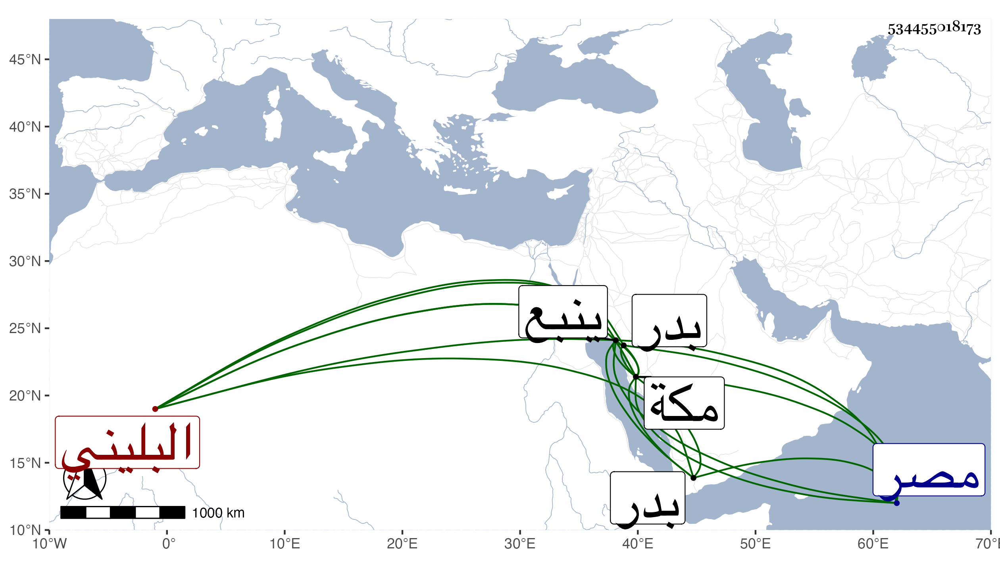

0902Sakhawi.DawLamic.ITO20230111-ara1.EIS1600.534455018173
Biography ID: 534455018173
957
سعيد بن محمد بن مفلح البليني حفيد مولى بقية بن رميثة . أرسله السيد بركات صاحب مكة هو وأخوه سنة خمس وأربعين إلى ينبع يتجسسان له أخبار مصر فلما تحقق ذلك صاحبه السيد صخرة أخرجهما منه فأقاما عند ابن دويغر قريبا من بدر فبعد أيام بلغهما تولية أخيه علي . مات بمكة في صفر سنة ثمان وأربعين .
